Who is our community?
Users and customers of our products (FOSS/PE)
Partners, Investors (Cisco, VMware, Google, EMC, Morphlabs, etc)
Employees of Puppet Labs
Primarily system administrators, but not always
| z, ? | toggle help (this) |
| space, → | next slide |
| shift-space, ← | previous slide |
| d | toggle debug mode |
| ## <ret> | go to slide # |
| c, t | table of contents (vi) |
| f | toggle footer |
| r | reload slides |
| n | toggle notes |
| p | run preshow |
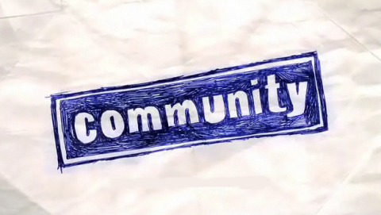
Users and customers of our products (FOSS/PE)
Partners, Investors (Cisco, VMware, Google, EMC, Morphlabs, etc)
Employees of Puppet Labs
Primarily system administrators, but not always

Eliminate Infrastructure Problems
Allow system administrators to work on interesting problems rather than the mundane

Awareness: Finding the community and visiting to learn more
(potential community members)
Membership: Taking time to join the community
(passive and active community members)
Engagement: Interacting with other community members
(active community members)
Development: Engaging with projects from Puppet Labs at a code level
(developers)

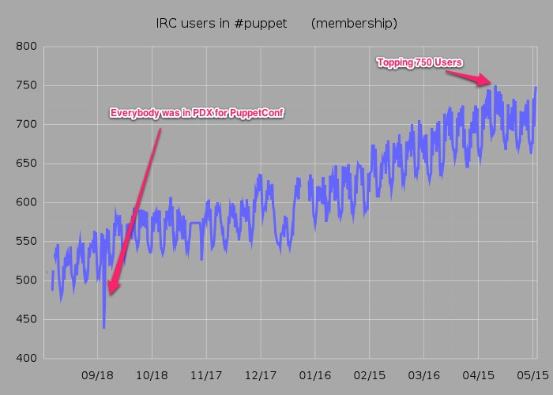

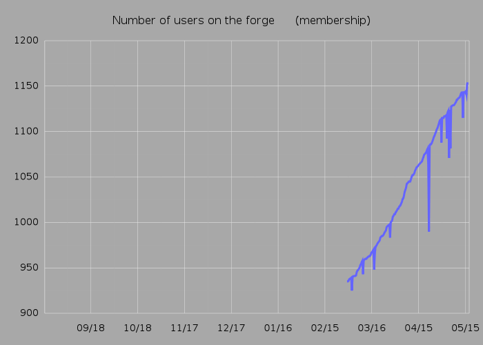

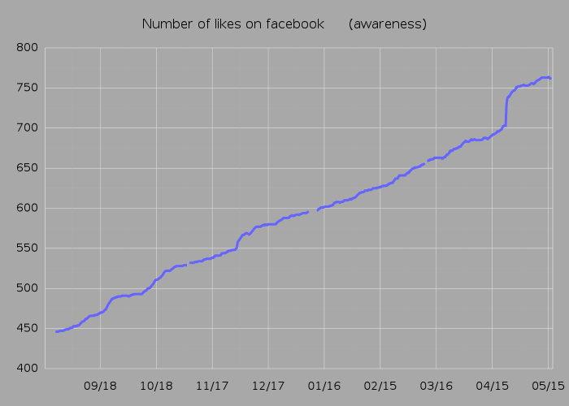

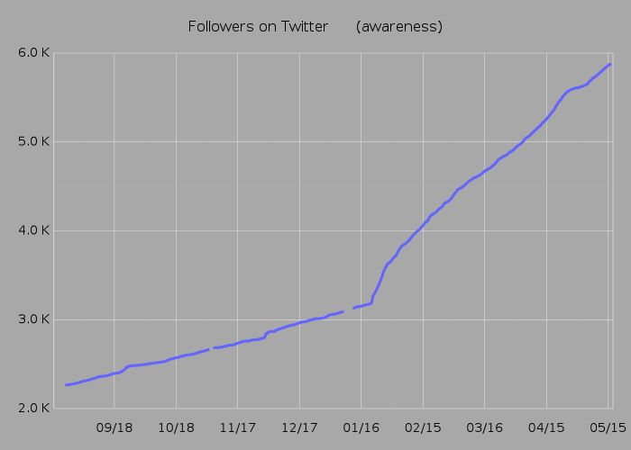


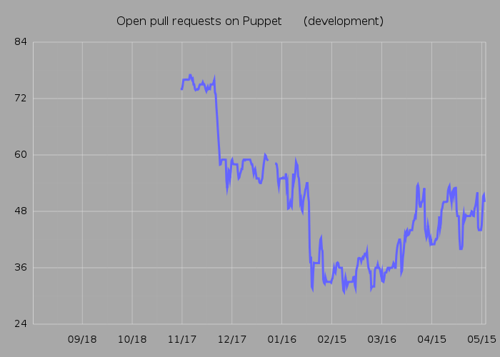
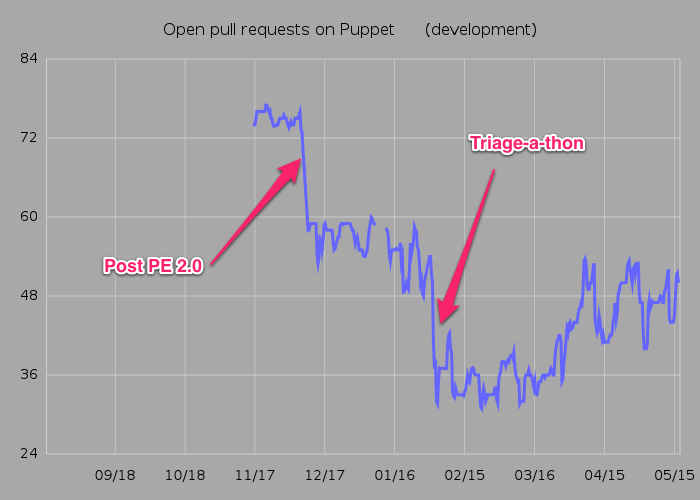
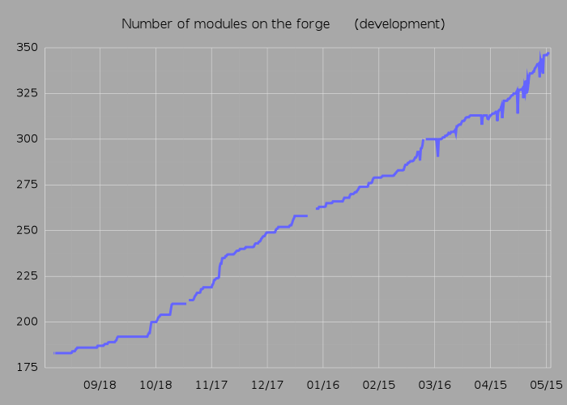

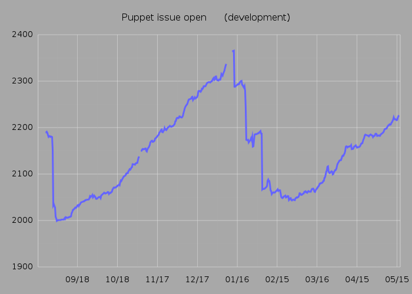
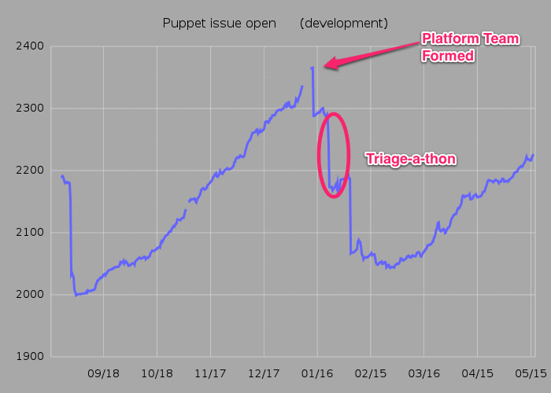

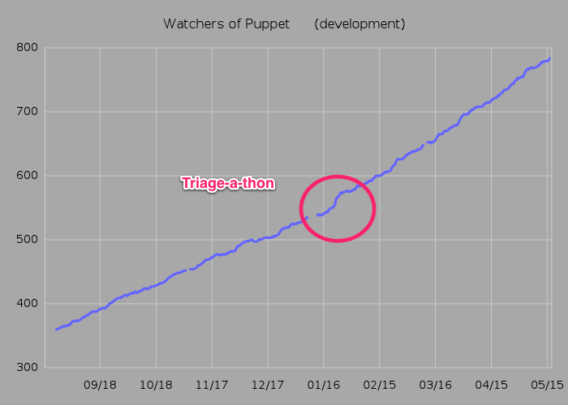

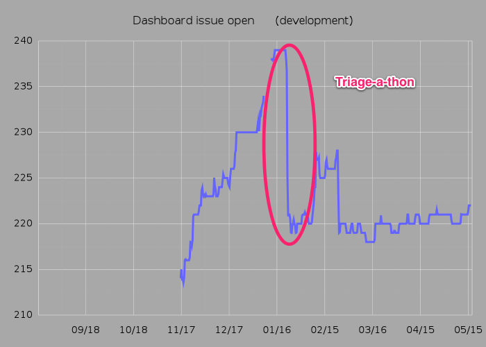


A strong community is built on transparency
Community enables customer delight